、 、
译者
@C-PIG ：
在之前的描述中
然而
首先我们将以一个简单的线性回归模型为例
-
直接使用封闭方程进行求根运算
， （ ） -
使用迭代优化方法
： （ ） ， ， ， ， 。 ， ： （ ） 、 （ ） 、 （ ） ， ， 。
接下来
最后
提示
在本章中包含许多数学公式
以及一些线性代数和微积分基本概念 ， 为了理解这些公式 。 你需要知道什么是向量 ， 什么是矩阵 ， 以及它们直接是如何转化的 ， 以及什么是点积 ， 什么是矩阵的逆 ， 什么是偏导数 ， 如果你对这些不是很熟悉的话 。 你可以阅读本书提供的 Jupyter 在线笔记 ， 它包括了线性代数和微积分的入门指导 ， 对于那些不喜欢数学的人 。 你也应该快速简单的浏览这些公式 ， 希望它足以帮助你理解大多数的概念 。 。
线性回归
在第一章
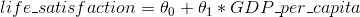
这个模型仅仅是输入量GDP_per_capita的线性函数θ[0]和θ[1]是这个模型的参数
公式 4-1
y_hat表示预测结果n表示特征的个数x[i]表示第i个特征的值θ[j]表示第j个参数（ θ[0]和特征权重值θ[1], θ[2], ..., θ[nj]）
上述公式可以写成更为简洁的向量形式
公式 4-2
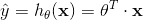
θ表示模型的参数向量包括偏置项θ[0]和特征权重值θ[1]到θ[n]θ^T表示向量θ的转置（ ） x为每个样本中特征值的向量形式， x[1]到x[n]， x[0]恒为 1θ^T · x表示θ^T和x的点积h[θ]表示参数为θ的假设函数
怎么样去训练一个线性回归模型呢θ值θ
在训练集X上使用公式 4-3 来计算线性回归假设h[θ]的均方差
公式 4-3
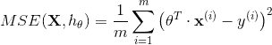
公式中符号的含义大多数都在第二章θh[θ]来代替hMSE(θ)来代替MSE(X, h[θ])
正规方程(The Normal Equation)
为了找到最小化损失函数的θ值
公式 4-4
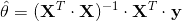
θ_hat指最小化损失θ的值y是一个向量， y^(1)到y^(m)的值
让我们生成一些近似线性的数据
import numpy as np
X = 2 * np.random.rand(100, 1)
y = 4 + 3 * X + np.random.randn(100, 1)

图 4-1
现在让我们使用正规方程来计算θ_hatnp.linalginv()函数来计算矩阵的逆dot()方法来计算矩阵的乘法
X_b = np.c_[np.ones((100, 1)), X]
theta_best = np.linalg.inv(X_b.T.dot(X_b)).dot(X_b.T).dot(y)
我们生产数据的函数实际上是y = 4 + 3x[0] + 高斯噪声
>>> theta_best
array([[4.21509616],[2.77011339]])
我们希望最后得到的参数为θ[0] = 4, θ[1] = 3而不是θ[0] = 3.865, θ[1] = 3.139θ[0] = 4.2150, θ[1] = 2.7701
现在我们能够使用θ_hat来进行预测
>>> X_new = np.array([[0],[2]])
>>> X_new_b = np.c_[np.ones((2, 1)), X_new]
>>> y_predict = X_new_b.dot(theta_best)
>>> y_predict
array([[4.21509616],[9.75532293]])
画出这个模型的图像
plt.plot(X_new,y_predict,"r-")
plt.plot(X,y,"b.")
plt.axis([0,2,0,15])
plt.show()

图 4-2
使用下面的 Scikit-Learn 代码可以达到相同的效果
>>> from sklearn.linear_model import LinearRegression
>>> lin_reg = LinearRegression()
>>> lin_reg.fit(X,y)
>>> lin_reg.intercept_, lin_reg.coef_
(array([4.21509616]),array([2.77011339]))
>>> lin_reg.predict(X_new)
array([[4.21509616],[9.75532293]])
计算复杂度
正规方程需要计算矩阵X^T · X的逆n * n的矩阵n是特征的个数O(n^2.4)到O(n^3)之间2^2.42^3
提示
当特征的个数较大的时候
例如 （ 特征数量为 100000 ： ） 正规方程求解将会非常慢 ， 。
有利的一面是O(m)
接下来
梯度下降
梯度下降是一种非常通用的优化算法
假设浓雾下Θ的局部梯度
具体来说Θ

图 4-3
在梯度下降中一个重要的参数是步长

图 4-4:学习率过小
另一方面

图 4-5
最后

图 4-6
幸运的是线性回归模型的均方差损失函数是一个凸函数
事实上Θ[1]会有较大的变化Θ[1]轴方向变得细长

图 4-7
正如你看到的
提示
当我们使用梯度下降的时候
应该确保所有的特征有着相近的尺度范围 ， 例如 （ 使用 Scikit Learn 的 ： StandardScaler类） 否则它将需要很长的时间才能够收敛 ， 。
这幅图也表明了一个事实
批量梯度下降
使用梯度下降的过程中Θ[j]下损失函数的梯度Θ[j]变化一点点时Θ[j]的损失函数的偏导数∂MSE/∂θ[j]
公式 4-5
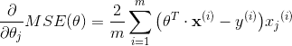
为了避免单独计算每一个梯度ᐁ[θ]MSE(θ)
公式 4-6
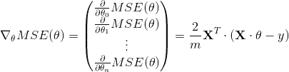
提示
在这个方程中每一步计算时都包含了整个训练集
X这也是为什么这个算法称为批量梯度下降 ， 每一次训练过程都使用所有的的训练数据 ： 因此 。 在大数据集上 ， 其会变得相当的慢 ， 但是我们接下来将会介绍更快的梯度下降算法 （ ） 然而 。 梯度下降的运算规模和特征的数量成正比 ， 训练一个数千数量特征的线性回归模型使用*梯度下降要比使用正规方程快的多 。 。
一旦求得了方向是上山的梯度向量θ中减去ᐁ[θ]MSE(θ)η和梯度向量的积决定了下山时每一步的大小
公式 4-7
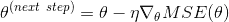
让我们看一下这个算法的应用
eta = 0.1 # 学习率
n_iterations = 1000
m = 100
theta = np.random.randn(2,1) # 随机初始值
for iteration in range(n_iterations):
gradients = 2/m * X_b.T.dot(X_b.dot(theta) - y)
theta = theta - eta * gradients
这不是太难θ
>>> theta
array([[4.21509616],[2.77011339]])
看

图 4-8
在左面的那副图中
为了找到一个好的学习率
你可能想知道如何选取迭代的次数ε
收敛速率
： 当损失函数是凸函数
同时它的斜率不能突变 ， 就像均方差损失函数那样 （ ） 那么它的批量梯度下降算法固定学习率之后 ， 它的收敛速率是 ， O(1/iterations)换句话说 。 如果你将容差 ， ε缩小 10 倍后这样可以得到一个更精确的结果 （ ） 这个算法的迭代次数大约会变成原来的 10 倍 ， 。
随机梯度下降
批量梯度下降的最要问题是计算每一步的梯度时都需要使用整个训练集
另一方面

图 4-9
当损失函数很不规则时
虽然随机性可以很好的跳过局部最优值learning schedule
下面的代码使用一个简单的learning schedule来实现随机梯度下降
n_epochs = 50
t0, t1 = 5, 50 #learning_schedule 的超参数
def learning_schedule(t):
return t0 / (t + t1)
theta = np.random.randn(2,1)
for epoch in range(n_epochs):
for i in range(m):
random_index = np.random.randint(m)
xi = X_b[random_index:random_index+1]
yi = y[random_index:random_index+1]
gradients = 2 * xi.T.dot(xi.dot(theta)-yi)
eta = learning_schedule(epoch * m + i)
theta = theta - eta * gradients
按习惯来讲m轮的迭代
>>> theta
array([[4.21076011],[2.748560791]])
图 4-10 展示了前 10 次的训练过程

图 4-10
由于每个实例的选择是随机的
通过使用 Scikit-Learn 完成线性回归的随机梯度下降SGDRegressor类η为 0.1eta0=0.1learning schedulepenalty = None
from sklearn.linear_model import SGDRegressor
sgd_reg = SGDRegressor(n_iter=50, penalty=None, eta0=0.1)
sgd_reg.fit(X,y.ravel())
你可以再一次发现
>>> sgd_reg.intercept_, sgd_reg.coef_
(array([4.18380366]),array([2.74205299]))
小批量梯度下降
最后一个梯度下降算法
小批量梯度下降在参数空间上的表现比随机梯度下降要好的多learning schedule

图 4-11
让我比较一下目前我们已经探讨过的对线性回归的梯度下降算法m表示训练样本的个数n表示特征的个数
表 4-1

提示
上述算法在完成训练后
得到的参数基本没什么不同 ， 它们会得到非常相似的模型 ， 最后会以一样的方式去进行预测 ， 。
多项式回归
如果你的数据实际上比简单的直线更复杂呢
让我们看一个例子
m = 100
X = 6 * np.random.rand(m, 1) - 3
y = 0.5 * X**2 + X + 2 + np.random.randn(m, 1)

图 4-12
很清楚的看出PolynomialFeatures类进行训练数据集的转换
>>> from sklearn.preprocessing import PolynomialFeatures
>>> poly_features = PolynomialFeatures(degree=2,include_bias=False)
>>> X_poly = poly_features.fit_transform(X)
>>> X[0]
array([-0.75275929])
>>> X_poly[0]
array([-0.75275929, 0.56664654])
X_poly现在包含原始特征X并加上了这个特征的平方X^2LinearRegression模型进行拟合
>>> lin_reg = LinearRegression()
>>> lin_reg.fit(X_poly, y)
>>> lin_reg.intercept_, lin_reg.coef_
(array([ 1.78134581]), array([[ 0.93366893, 0.56456263]]))

图 4-13
还是不错的y_hat = 0.56 x[1]^2 + 0.93x[1] + 1.78y = 0.5x[1]^2 + 1.0x[1] + 2.0再加上一些高斯噪声
请注意LinearRegression会自动添加当前阶数下特征的所有组合a,bdegree=3LinearRegression时a^2,a^3,b^2以及b^3ab,a^2b,ab^2
提示
PolynomialFeatures(degree=d)把一个包含n个特征的数组转换为一个包含(n+d)!/(d!n!)特征的数组， n!表示n的阶乘等于 ， 1 * 2 * 3 ... * n小心大量特征的组合爆炸 。 ！
学习曲线
如果你使用一个高阶的多项式回归

图 4-14
当然
在第二章
另一种方法是观察学习曲线
from sklearn.metrics import mean_squared_error
from sklearn.model_selection import train_test_split
def plot_learning_curves(model, X, y):
X_train, X_val, y_train, y_val = train_test_split(X, y, test_size=0.2)
train_errors, val_errors = [], []
for m in range(1, len(X_train)):
model.fit(X_train[:m], y_train[:m])
y_train_predict = model.predict(X_train[:m])
y_val_predict = model.predict(X_val)
train_errors.append(mean_squared_error(y_train_predict, y_train[:m]))
val_errors.append(mean_squared_error(y_val_predict, y_val))
plt.plot(np.sqrt(train_errors), "r-+", linewidth=2, label="train")
plt.plot(np.sqrt(val_errors), "b-", linewidth=3, label="val")
我们一起看一下简单线性回归模型的学习曲线
lin_reg = LinearRegression()
plot_learning_curves(lin_reg, X, y)

图 4-15
这幅图值得我们深究
上面的曲线表现了一个典型的欠拟合模型
提示
如果你的模型在训练集上是欠拟合的
添加更多的样本是没用的 ， 你需要使用一个更复杂的模型或者找到更好的特征 。 。
现在让我们看一个在相同数据上 10 阶多项式模型拟合的学习曲线
from sklearn.pipeline import Pipeline
polynomial_regression = Pipeline((
("poly_features", PolynomialFeatures(degree=10, include_bias=False)),
("sgd_reg", LinearRegression()),
))
plot_learning_curves(polynomial_regression, X, y)
这幅图像和之前的有一点点像
- 在训练集上
， 。 - 图中的两条曲线之间有间隔
， ， 。 ， ， 。

图 4-16
提示
改善模型过拟合的一种方法是提供更多的训练数据
直到训练误差和验证误差相等 ， 。
偏差和方差的权衡
在统计和机器学习领域有个重要的理论
一个模型的泛化误差由三个不同误差的和决定 ： ：
- 偏差
泛化误差的这部分误差是由于错误的假设决定的 ： 例如实际是一个二次模型 。 你却假设了一个线性模型 ， 一个高偏差的模型最容易出现欠拟合 。 。 - 方差
这部分误差是由于模型对训练数据的微小变化较为敏感 ： 一个多自由度的模型更容易有高的方差 ， 例如一个高阶多项式模型 （ ） 因此会导致模型过拟合 ， 。 - 不可约误差
这部分误差是由于数据本身的噪声决定的 ： 降低这部分误差的唯一方法就是进行数据清洗 。 例如 （ 修复数据源 ： 修复坏的传感器 ， 识别和剔除异常值 ， ） 。
线性模型的正则化
正如我们在第一和第二章看到的那样
对于一个线性模型
（ ） （ ）
岭回归α Σ θ[i]^2, i = 1 -> n
提示
一般情况下
训练过程使用的损失函数和测试过程使用的评价函数是不一样的 ， 除了正则化 。 还有一个不同 ， 训练时的损失函数应该在优化过程中易于求导 ： 而在测试过程中 ， 评价函数更应该接近最后的客观表现 ， 一个好的例子 。 在分类训练中我们使用对数损失 ： 马上我们会讨论它 （ 作为损失函数 ） 但是我们却使用精确率/召回率来作为它的评价函数 ， 。
超参数α决定了你想正则化这个模型的强度α = 0那此时的岭回归便变为了线性回归α非常的大
公式 4-8
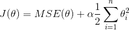
值得注意的是偏差θ[0]是没有被正则化的i=1而不是i=0w作为特征的权重向量θ[1]到θ[n]1/2 (||w||₂)^2||·||₂表示权重向量的l2范数αw
提示
在使用岭回归前
对数据进行放缩 ， 可以使用 （ StandardScaler是非常重要的 ） 算法对于输入特征的数值尺度 ， scale （ 非常敏感 ） 大多数的正则化模型都是这样的 。 。
图 4-17 展示了在相同线性数据上使用不同α值的岭回归模型最后的表现PolynomialFearures进行扩展StandardScaler进行缩放α增大的时候
对线性回归来说A是一个除了左上角有一个0的n * n的单位矩0代表偏差项θ[0]不被正则化

图 4-17
公式 4-9
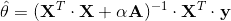
下面是如何使用 Scikit-Learn 来进行封闭方程的求解
>>> from sklearn.linear_model import Ridge
>>> ridge_reg = Ridge(alpha=1, solver="cholesky")
>>> ridge_reg.fit(X, y)
>>> ridge_reg.predict([[1.5]])
array([[ 1.55071465]]
使用随机梯度法进行求解
>>> sgd_reg = SGDRegressor(penalty="l2")
>>> sgd_reg.fit(X, y.ravel())
>>> sgd_reg.predict([[1.5]])
array([[ 1.13500145]])
penalty参数指的是正则项的惩罚类型l2表明你要在损失函数上添加一项l2范数平方的一半
Lasso 回归
Lasso 回归l1范数而不是权重向量l2范数平方的一半
公式 4-10
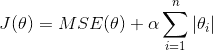
图 4-18 展示了和图 4-17 相同的事情α的值

图 4-18
Lasso 回归的一个重要特征是它倾向于完全消除最不重要的特征的权重α = 10^(-7)
你可以从图 4-19 知道为什么会出现这种情况α = 0l1惩罚α -> ∞θ[1] = 0θ[2] = 0α = 0.5的l1惩罚θ[2] = 0这根轴上θ[2] = 0l2惩罚θ = 0

图 4-19
提示
在 Lasso 损失函数中
批量梯度下降的路径趋向与在低谷有一个反弹 ， 这是因为在 。 θ[2] = 0时斜率会有一个突变为了最后真正收敛到全局最小值 。 你需要逐渐的降低学习率 ， 。
Lasso 损失函数在theta[i] = 0, i = 1, 2, ..., n处无法进行微分运算g后它可以在任何θ[i] = 0的情况下进行计算
公式 4-11
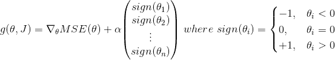
下面是一个使用 Scikit-Learn 的Lasso类的小例子SGDRegressor(penalty="l1")来代替它
>>> from sklearn.linear_model import Lasso
>>> lasso_reg = Lasso(alpha=0.1)
>>> lasso_reg.fit(X, y)
>>> lasso_reg.predict([[1.5]])
array([ 1.53788174]
（ ） （ ）
弹性网络介于 Ridge 回归和 Lasso 回归之间rr = 0时r = 1时
公式 4-12
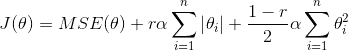
那么我们该如何选择线性回归ElasticNetl1_ratio指的就是混合率r
>>> from sklearn.linear_model import ElasticNet
>>> elastic_net = ElasticNet(alpha=0.1, l1_ratio=0.5)
>>> elastic_net.fit(X, y)
>>> elastic_net.predict([[1.5]])
array([ 1.54333232])
（ ） （ ）
对于迭代学习算法

图 4-20
提示
随机梯度和小批量梯度下降不是平滑曲线
你可能很难知道它是否达到最小值 ， 一种解决方案是 。 只有在验证误差高于最小值一段时间后 ， 你确信该模型不会变得更好了 （ ） 才停止 ， 之后将模型参数回滚到验证误差最小值 ， 。
下面是一个早期停止法的基础应用
from sklearn.base import clone
sgd_reg = SGDRegressor(n_iter=1, warm_start=True, penalty=None,learning_rate="constant", eta0=0.0005)
minimum_val_error = float("inf")
best_epoch = None
best_model = None
for epoch in range(1000):
sgd_reg.fit(X_train_poly_scaled, y_train)
y_val_predict = sgd_reg.predict(X_val_poly_scaled)
val_error = mean_squared_error(y_val_predict, y_val)
if val_error < minimum_val_error:
minimum_val_error = val_error
best_epoch = epoch
best_model = clone(sgd_reg)
注意warm_start=True时fit()方法后
逻辑回归
正如我们在第 1 章中讨论的那样
概率估计
那么它是怎样工作的logistic()函数进行二次加工后进行输出
公式 4-13
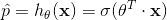
Logistic 函数σ()表示
公式 4-14
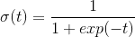

图 4-21
一旦 Logistic 回归模型估计得到了x属于正类的概率p_hat = h[θ](x)y_hat
公式 4-15
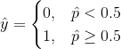
注意当t < 0时σ(t) < 0.5t >= 0时σ(t) >= 0.5θ^T · x是正数的话
训练和损失函数
好θy = 1y = 0x的损失函数来实现
公式 4-16
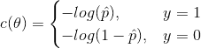
这个损失函数是合理的t接近 0 时-log(t)变得非常大t接近于 1 时-log(t)接近 0
整个训练集的损失函数只是所有训练实例的平均值
公式 4-17
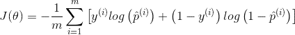
但是这个损失函数对于求解最小化损失函数的θ是没有公式解的j个模型参数θ[j]的偏导数
公式 4-18
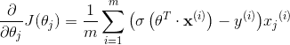
这个公式看起来非常像公式 4-5j项特征值
决策边界
我们使用鸢尾花数据集来分析 Logistic 回归

图 4-22
让我们尝试建立一个分类器
>>> from sklearn import datasets
>>> iris = datasets.load_iris()
>>> list(iris.keys())
['data', 'target_names', 'feature_names', 'target', 'DESCR']
>>> X = iris["data"][:, 3:] # petal width
>>> y = (iris["target"] == 2).astype(np.int)
接下来
from sklearn.linear_model import LogisticRegression
log_reg = LogisticRegression()
log_reg.fit(X, y)
我们来看看模型估计的花瓣宽度从 0 到 3 厘米的概率估计
X_new = np.linspace(0, 3, 1000).reshape(-1, 1)
y_proba = log_reg.predict_proba(X_new)
plt.plot(X_new, y_proba[:, 1], "g-", label="Iris-Virginica")
plt.plot(X_new, y_proba[:, 0], "b--", label="Not Iris-Virginica")

图 4-23
Virginica 花的花瓣宽度predict()方法而不是predict_proba()方法
>>> log_reg.predict([[1.7], [1.5]])
array([1, 0])
图 4-24 表示相同的数据集

图 4-24
就像其他线性模型l1或者l2惩罚使用进行正则化l2惩罚
注意
在 Scikit-Learn 的
LogisticRegression模型中控制正则化强度的超参数不是α与其他线性模型一样 （ ） 而是它的逆 ， ： C。 C的值越大模型正则化强度越低 ， 。
Softmax 回归
Logistic 回归模型可以直接推广到支持多类别分类
这个想法很简单x时k类的分数s[k](x)Softmax函数s[k](x)的公式看起来很熟悉
公式 4-19k类的 Softmax 得分
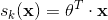
注意θ[k]θ中
一旦你计算了样本x的每一类的得分Softmax函数k类的概率p_hat[k]e的s[k](x)次方
公式 4-20
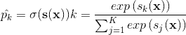
K表示有多少类s(x)表示包含样本x每一类得分的向量σ(s(x)[k])表示给定每一类分数之后， x属于第k类的概率
和 Logistic 回归分类器一样
公式 4-21
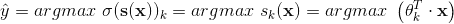
argmax运算返回一个函数取到最大值的变量值。 ， σ(s(x)[k])最大时的k的值
注意
Softmax 回归分类器一次只能预测一个类
即它是多类的 （ 但不是多输出的 ， ） 因此它只能用于判断互斥的类别 ， 如不同类型的植物 ， 你不能用它来识别一张照片中的多个人 。 。
现在我们知道这个模型如何估计概率并进行预测
公式 4-22
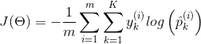
- 如果对于第
i个实例的目标类是k， y[k]^(i) = 1， y[k]^(i) = 0。
可以看出K = 2
交叉熵
交叉熵源于信息论
假设你想要高效地传输每天的天气信息 。 如果有八个选项 。 晴天 （ 雨天等 ， ） 则可以使用 3 位对每个选项进行编码 ， 因为 ， 2^3=8但是 。 如果你认为几乎每天都是晴天 ， 更高效的编码 ， 晴天 “ 的方式是 ” 只用一位 ： 0 （ ） 剩下的七项使用四位 。 从 1 开始 （ ） 交叉熵度量每个选项实际发送的平均比特数 。 如果你对天气的假设是完美的 。 交叉熵就等于天气本身的熵 ， 即其内部的不确定性 （ ） 但是 。 如果你的假设是错误的 ， 例如 （ 如果经常下雨 ， 交叉熵将会更大 ） 称为 Kullback-Leibler 散度 ， KL 散度 （ ） 。 两个概率分布
p和q之间的交叉熵定义为分布至少是离散的 （ ） ：
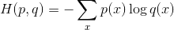
这个损失函数关于θ[k]的梯度向量为公式 4-23
公式 4-23k类交叉熵的梯度向量
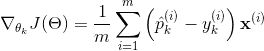
现在你可以计算每一类的梯度向量θ
让我们使用 Softmax 回归对三种鸢尾花进行分类LogisticRregression对模型进行训练时multi_class参数为l2正则化C控制它
X = iris["data"][:, (2, 3)] # petal length, petal width
y = iris["target"]
softmax_reg = LogisticRegression(multi_class="multinomial",solver="lbfgs", C=10)
softmax_reg.fit(X, y)
所以下次你发现一个花瓣长为 5 厘米
>>> softmax_reg.predict([[5, 2]])
array([2])
>>> softmax_reg.predict_proba([[5, 2]])
array([[ 6.33134078e-07, 5.75276067e-02, 9.42471760e-01]])是

图 4-25
图 4-25 用不同背景色表示了结果的决策边界
练习
- 如果你有一个数百万特征的训练集
， ？ - 假设你训练集中特征的数值尺度
（ ） ， ？ ？ ？ - 训练 Logistic 回归模型时
， ？ - 在有足够的训练时间下
， ？ - 假设你使用批量梯度下降法
， 。 ， ？ ？ - 当验证误差升高时
， ？ - 哪个梯度下降算法
（ ） ？ ？ ？ - 假设你使用多项式回归
， ， 。 ？ ？ - 假设你使用岭回归
， ， 。 ？ α， ？ - 你为什么要这样做
：
- 使用岭回归代替线性回归
？ - Lasso 回归代替岭回归
？ - 弹性网络代替 Lasso 回归
？
- 假设你想判断一副图片是室内还是室外
， 。 ， ？ - 在 Softmax 回归上应用批量梯度下降的早期停止法
（ ） 。
附录 A 提供了这些练习的答案